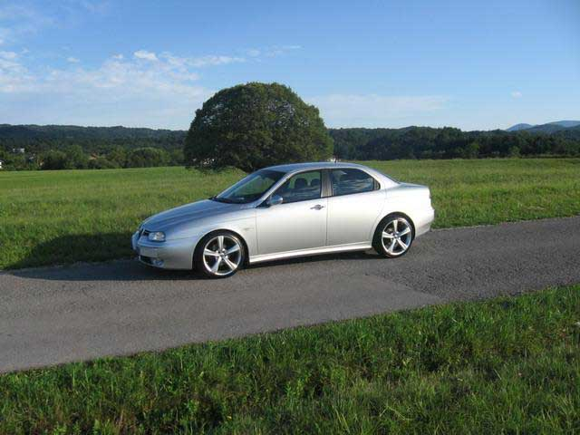
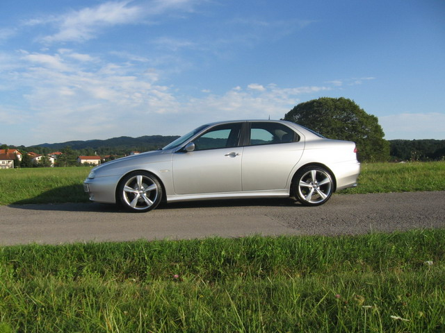
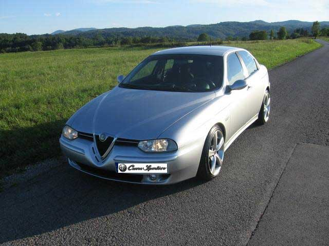
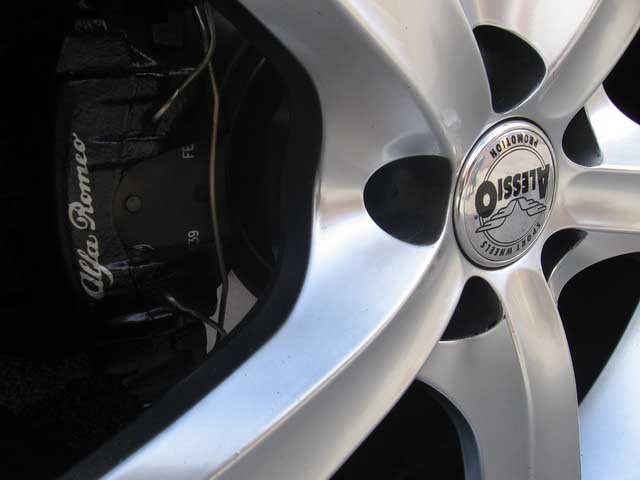
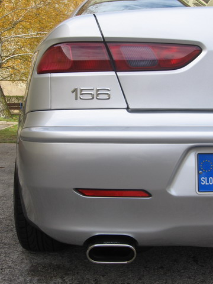

Valc - Slovenia
Here are some pics of my A.R. 156, 1.8 TS "sportpack"
Modifications:
- Alessio aloywheels "Super"; 8x18
- Falken tyres FK 452; 215/40/18
- KW / Weitec sportsuspension kit; 45/35 mm
- sideskirts (original A.R.)
- H.I.D. xenon kit H7 (not on pic yet)
- sport exhaust
- MOMO seats & carbon shift cnob




Submitted: 2007
![[Prev]](bw_prev.gif)
![[Index]](bw_index.gif)
![[Next]](bw_next.gif)